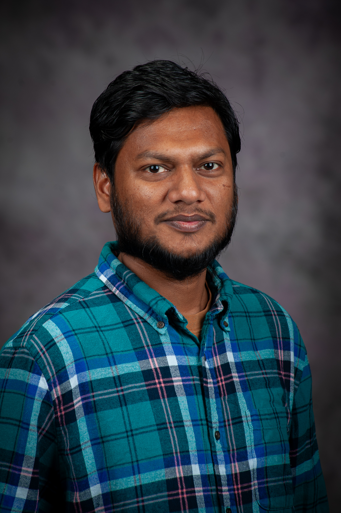

Shalauddin
I am a PhD Candidate and Graduate Research Assistant at the James R. Macdonald Laboratory in the Department of Physics at Kansas State University. My research focuses on Atomic, Molecular, and Optical Physics, with a specialization in ultrafast femtosecond laser science. I investigate changes in molecular structure and dynamics induced by interactions with ultrafast femtosecond laser pulses.
Research and learning areas
View research projects →Molecular Dynamics & Coulomb Explosion
Theory and imaging of ultrafast molecular fragmentation.
Explore this topic →Ultrafast Lasers & Experimental Methods
Femtosecond lasers, pump-probe methods, and experimental optics.
Explore this topic →COLTRIMS & Data Acquisition
Coincidence spectroscopy, detectors, and experimental instrumentation.
Explore this topic →Data Analysis & Simulation
Scientific programming, momentum reconstruction, and computational modeling.
Explore this topic →